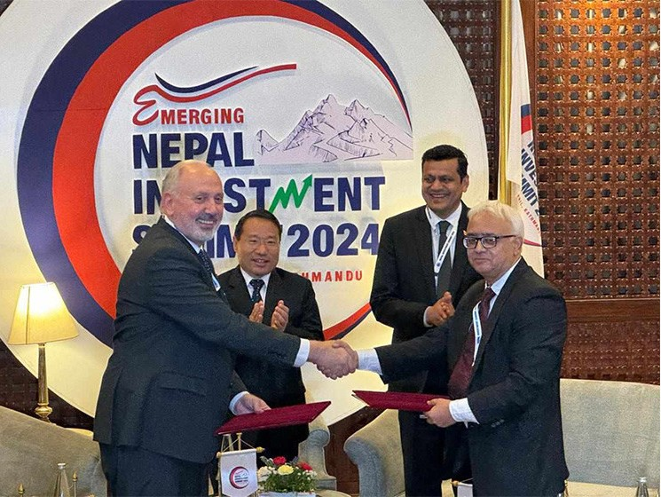

Nepal Investment Summit: Two organizations sign MoU for PPP cooperation

KATHMANDU, April 29: The World Association of PPP Units and Professionals (WAPP) and the Nepalese Association of PPP Professionals and Practitioners (NAPPP) have signed a Memorandum of Understanding (MoU) for bilateral cooperation.
The MoU was signed in the course of the ongoing Third Investment Summit which has been underway in Kathmandu since Sunday.
WAPP President Ziad-Alexandre Hayek and NAPPP Chair Anup Kumar Upadhyay signed the document on behalf of their respective sides.
Both parties have agreed to collaborate in matters of mutual concerns and exchange knowledge and experiences regarding the public-private partnership (PPP).
Strengthening of physical infrastructure and PPP pipelines, preparations of PPP projects and programs, and collaboration for the promotion of international exercises in the implementation, hosting of joint gatherings and assemblies, and publications of joint journals are among the contents of the MoU.
NAPPP Chairperson Upadhyay said the cooperation between the WAPP and NAPPP is expected to help Nepal enhance its knowledge and capacity regarding the PPP and strengthen projects on PPP.
WAPP President Hayek said Nepal has a long experience in the implementation of PPP projects and this approach has brought transformations mainly in the hydropower and clean energy sectors. Nepal's home-grown practices and its experiences are exemplary, he said.